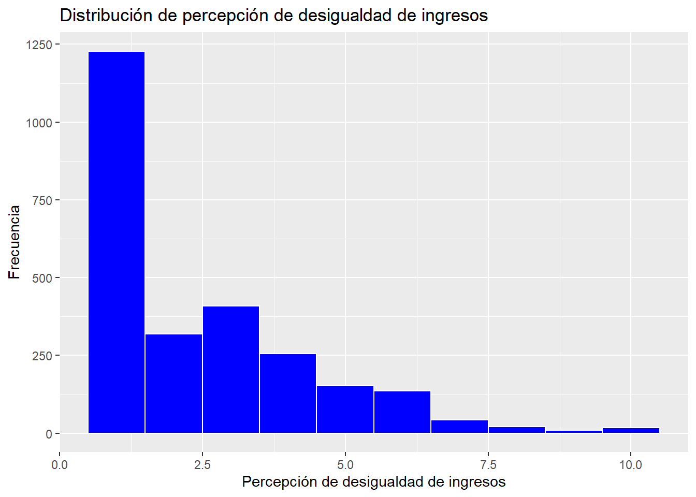
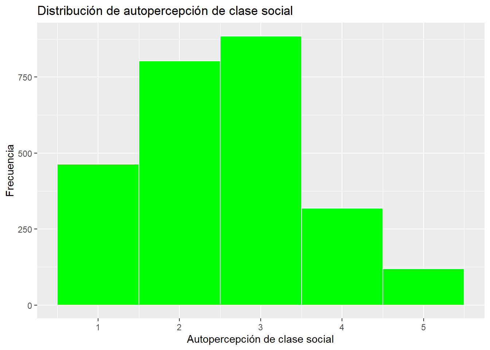
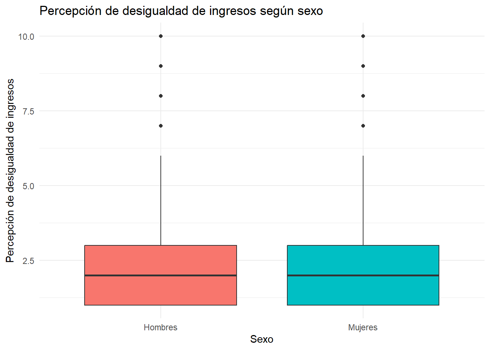
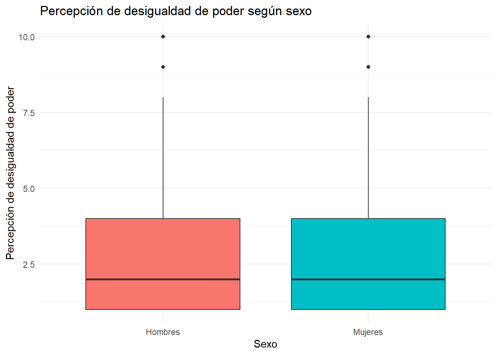
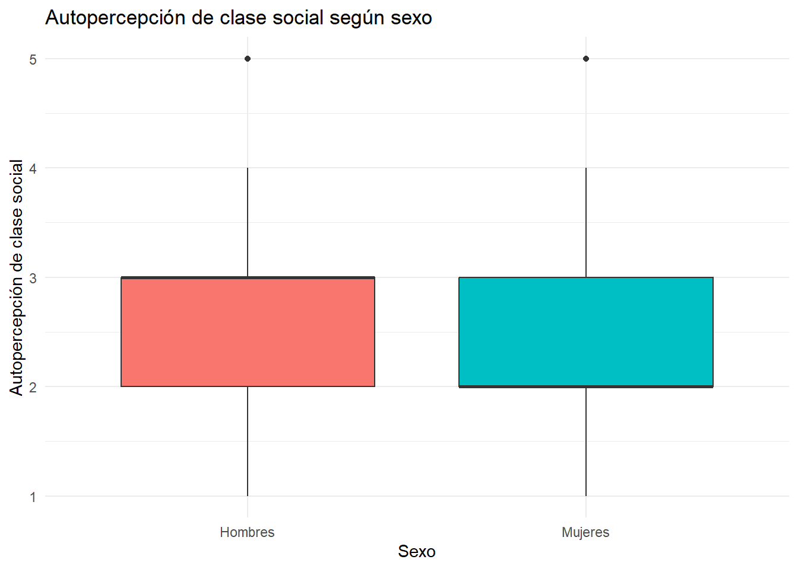
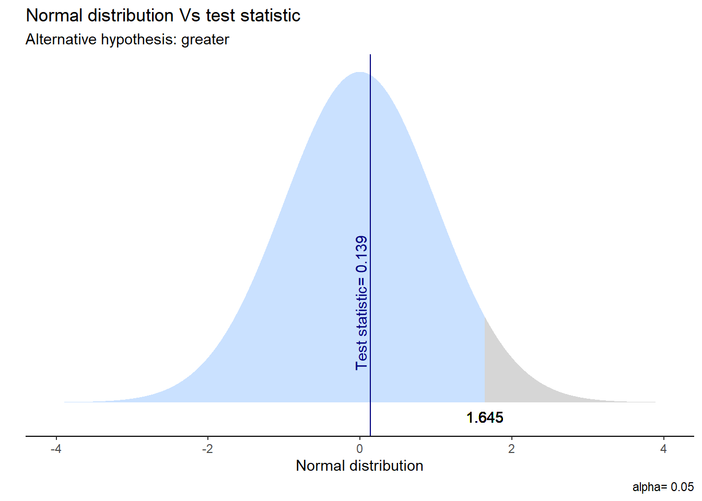

Trabajo final: Análisis sobre las percepciones de desigualdad en Chile
Estadística Correlacional 2024, Carrera de Sociología - Universidad de Chile
Autores/as
Milen Alarcón
Carla Canales
Constanza Jiménez
Camila Navarro
Belén Padilla
Martina Robledo
Fecha de publicación
1 de diciembre de 2024
Resumen
En la presente investigación se busca explorar la percepción de desigualdad en Chile considerando los niveles de ingreso, poder y la autopercepción de clase social, analizándolo además con una perspectiva de género. En base a esto se proponen tres hipótesis, las cuales son: “Las mujeres perciben que están en una clase social distinta a los hombres”, siendo esta la hipótesis principal, “Las mujeres perciben distinta desigualdad de ingreso que los hombres” y “Las mujeres perciben distinta desigualdad de poder que los hombres”. Para buscar la evidencia que permita dar a conocer lo planteado en estas hipótesis, se analizaron los datos de la encuesta PNUD-DES 2016, la cual cuenta con una muestra representativa de 2.613 casos de hombres y mujeres mayores de 18 años en distintas regiones del país.
Para esto se utilizaron distintas técnicas de estadística y análisis descriptivos y bivariados, que dieron como resultado hallazgos que indican que no hay suficiente evidencia para afirmar que existen diferencias significativas entre hombres y mujeres sobre la percepción de desigualdad de ingresos y poder, al igual que las mujeres se perciban en clases sociales más bajas que el género contrario, lo que podría significar, que ambos géneros tienen percepciones similares en cuanto a la desigualdad de ingresos y poder. Sin embargo, sí existen hallazgos significativos sobre la primera hipótesis, pudiendo comprobarse que las mujeres tienden a ubicarse en una clase social diferentes a la de los hombres, lo que se puede entender como un reflejo del contraste entre géneros y su autopercepción de clase social.
1 Introducción
Durante el año 2016, el paradigma político social se vió caracterizado por un marcado debate en torno a la desigualdad, un tópico que ha sido constantemente centro de la discusión a nivel continental. Particularmente, abocandonos al caso chileno, la desigualdad hasta el día de hoy continúa siendo uno de los desafíos más importantes para asegurar la cohesión social y el desarrollo de una sociedad sostenible. Por su parte, el principal aspecto que releva el ámbito de la desigualdad como tema a tratar en la presente investigación es que “Chile es el segundo país más desigual de la OCDE (índice de Gini antes y después de impuestos y transferencias.” (Mieres, 2020, p.92). Por lo tanto, decir que Chile es desigual es una obviedad, ya que esto ha sido parte de su fisonomía histórica.
En este contexto, analizar las percepciones de desigualdad resulta crucial, para comprender cómo esta realidad estructural afecta la manera en que las personas perciben la desigualdad en ingresos y poder. Los principales antecedentes e investigaciones anteriores en Chile, no responden a un análisis de género en las percepciones de desigualdad entre hombres y mujeres, sin embargo, desde un marco general los hallazgos “(…) señalan que la percepción de desigualdad posee variaciones relevantes en la población, las que serían afectadas por una serie de determinantes contextuales e individuales.” (Castillo, et al. 2012, p.100) Lo cual también se ve reflejado en estudios que presentan hipotesis que señalan que “… se percibirá una sociedad más igualitaria, cuanto más alta es la autoubicación de las personas en la estructura social” (Evans et al.,1992, p. 468, citado por Rodriguez, 2014, p.98)
Desde la presente investigación se analizará la percepción de desigualdad, la cual se entiende como la forma en que los individuos interpretan y valoran disparidades sociales, económicas y políticas dentro de la sociedad. A su vez, la desigualdad como concepto se fragmenta, en especificidades cubriendo dimensiones sujetas a diferentes contextos, como lo son los ingresos y el poder. Según la conceptualización derivada de Fraser (2008) la desigualdad de poder se refiere a la distribución desigual de la capacidad de controlar, influir o acceder a recursos que afectan a otros. Por otro lado, la desigualdad de ingresos según el PNUD (2017) refiere a la disparidad en la distribución de los ingresos entre los diferentes miembros de una sociedad.
Estos conceptos resultan claves porque no solo reflejan las dinámicas multifacéticas que configuran las desigualdades, sino también la manera en que estas son percibidas e influidas por factores como el género y la clase social autopercibida, elementos que condicionan la interacción de los individuos con su entorno social.
La investigación tiene como objetivo principal analizar las percepciones de desigualdad de poder e ingresos en Chile, específicamente en relación con el género y la clase social autopercibida. Este análisis se desarrollará bajo tres hipótesis: En primer lugar, las mujeres perciben que están en una clase social distinta a la de los hombres; En segundo lugar, las mujeres perciben distinta desigualdad de ingresos que los hombres; Y por último las mujeres perciben distinta desigualdad de poder que los hombres.
2 Metodología
2.1 Datos
La base de datos a utilizar corresponde al PNUD-DES, resultado de la aplicación de la Encuesta Desigualdades Económicas y Sociales (PNUD-DES) 2016, esta fue desarrollada en el marco de un estudio interdisciplinario enfocado en estudiar desigualdades socioeconómicas en Chile como iniciativa del PNUD entre los años 2016 y 2017. La encuesta realizada en el 2016, contó con un universo de mujeres y hombres de 18 años o más, estos pertenecientes a diversos niveles socioeconómicos y habitaban tanto zonas urbanas como rurales de las 15 regiones del país, excluyendo zonas de difícil acceso. El tamaño de la muestra alcanzado fue de 2.613 casos.
La base de datos que contiene sólo las variables por mencionar a continuación, lleva por nombre DES_2016_REC. La elección de estas variables responde al objetivo inicial de poder demostrar cuantitativamente, o no, que en su generalidad, las mujeres de Chile se perciben a sí mismas distintas en relación a la clase social y además, perciben una desigualdad de ingresos y poder distinta respecto al sexo masculino. Las hipótesis responden a la misma fórmula:
La variable sexo, busca registrar el sexo de las personas que respondieron la encuesta. Esta se presentaba en la encuesta como P7- Sexo del/la entrevistado/a y contaba con los valores 1) Hombre y 2) Mujer. Por lo tanto, la variable sexo corresponde a una de caracter dicotómica y nominal. Por otro lado, sexo se recodifico con la intencion de que quedara con los valores 0 y 1, los necesarios para el cálculo de punto biserial. Esta variable lleva el nombre de sexo_rec.
La variable p9_2, responde a la pregunta P9B- ¿Cuán desigual cree que es Chile? Ingresos. Esta pregunta busca medir cómo los entrevistados opinan respecto a que tan igualitaria es la distribución de ingresos en Chile, lo que puede traducirse de alguna manera, en que tan igualitaria es la sociedad chilena en lo que económicamente respecta. Para esto, se le presenta al/la entrevistado/a una escala de valores que va del 1 al 10, donde 1 es Muy igual y 10 es Muy desigual. Respecto a esto último, la variable p9_2, corresponde a una de carácter continua y ordinal. Esta variable fue recodificada, lo que significó un cambio en el orden, donde 1 corresponde a Muy desigual y 10 Muy igual. Esta decisión metodológica respondió a la necesidad de que las categorías y el valor otorgado vayan de menos a más según corresponda. Luego de estas transformaciones, la variable pasó a llamarse per_des_ing.
La variable p9_3, responde a la pregunta P9D- ¿Cuán desigual cree que es Chile? Poder. Esta pregunta busca medir cómo los entrevistados opinan respecto a que tan igualitaria es la distribución de poder en Chile. Para esto, se le presenta al/la entrevistado/a una escala de valores que va del 1 al 10, donde 1 es Muy igual y 10 es Muy desigual. Respecto a esto último, la variable p9_3, al igual que la variable anterior corresponde a una de carácter continua y ordinal que fue recodificada. El nuevo orden significó que 1 corresponda a Muy desigual y 10 a Muy igual, esta decisión metodológica respondió nuevamente a la necesidad de que las categorías y el valor otorgado vayan de menos a más según corresponda. Luego de estas transformaciones, la variable pasó a llamarse per_des_p.
Finalmente, la variable p_ 14, corresponde a la pregunta P14- ¿En qué clase social ubicaría a la gente como usted?, la que busca conocer la autoidentificación de cada entrevistada/o respecto a su clase social. Para esto, se le presenta al entrevistado una serie de respuestas, 1) Clase alta, 2) Clase media alta, 3) Clase media, 4) Clase media baja, 5) Clase baja. Finalmente, la última variable utilizada corresponde a una categórica y ordinal, puesto que se ordena en jerarquías. Esta variable cambió de sentido respondiendo a la necesidad de que la categoría y el valor otorgado vayan de menos a más según corresponda, transformando 1) Clase baja, 2) Clase media baja, 3) Clase media, 4) Clase media alta y 5) Clase alta. Luego de esta transformación, la variable pasó a llamarse autoper_c_soc.
Respecto a los valores perdidos, se identifican textualmente en el Manual metodológico y de uso, estos corresponden a los valores 8, 9, 88 y 99, entre otros, estos se recodificaron a NA y prontamente, todos fueron eliminados.
2.3 Métodos
Finalmente, se utilizó principalmente para la hipótesis #1 la tabla de contingencia, el cálculo de Chi cuadrado, el cálculo de Phi y test de proporciones, esto debido a que las variables son de carácter categóricas. Por otro lado, para el cálculo de las hipótesis #2 y #3 se recodifico la variable sexo a 0 y 1 para hombre y mujer respectivamente con el objetivo de hacer posible la correlacion de punto biserial. Esta variable, pasó a llamarse sexo_rec, además, se utilizó la prueba hipotesis t y el test de proporciones para llevar a cabo el estudio de las hipótesis.
3 Análisis
3.1 Análisis descriptivo
En la siguiente tabla se exponen los principales estadísticos descriptivos de cada variable
ver código
kable(summary_table, caption ="Resumen descriptivo de todas las variables")
Resumen descriptivo de todas las variables
sexo
per_des_ing
per_des_p
autoper_c_soc
Min. :1.000
Min. : 1.000
Min. : 1.000
Min. :1.000
1st Qu.:1.000
1st Qu.: 1.000
1st Qu.: 1.000
1st Qu.:2.000
Median :2.000
Median : 2.000
Median : 2.000
Median :3.000
Mean :1.614
Mean : 2.477
Mean : 2.714
Mean :2.546
3rd Qu.:2.000
3rd Qu.: 3.000
3rd Qu.: 4.000
3rd Qu.:3.000
Max. :2.000
Max. :10.000
Max. :10.000
Max. :5.000
Resumen descriptivo de todas las variables
Se muestra que la medida de tendencia central de la variable “sexo” es 1.614, esto indica que el promedio de la muestra tiene una ligera mayoría de mujeres, ya que el valor número 2 representa a las mujeres. Y la mediana es 2, lo que confirma que más del 50% de los encuestados son mujeres, reafirmando una tendencia clara en la composición de la muestra.
En la variable “percepción de desigualdad de ingresos” la media es 2.477, esto indica que los encuestados tienden a percibir una alta desigualdad en los ingresos. La mediana es 2, demostrando que la mayoría de las respuestas se aglomera en los niveles más bajos de la escala, lo que refuerza la percepción significativa de una desigualdad de ingresos.
La media para la variable “percepción de desigualdad de poder” es 2.714, es ligeramente superior a la “percepción de desigualdad de ingresos”, pero aún se encuentra dentro del rango de valores bajos. Esto da a entender que los encuestados perciben una desigualdad de poder demostrativa. La mediana es 2, lo que significa que más del 50% de los encuestados consideran que la desigualdad de poder es alta.
En la variable de “autopercepción de clase social” la media es 2.546, esto indica que los encuestados tienden a ubicarse en promedio en una clase social media-baja. La mediana es 3, esto quiere decir que más de la mitad de los encuestados se consideran en la clase media. Esto evidencia cierta diversificación en las respuestas, aunque tiene una inclinación hacía las categorías más bajas de la escala.
Desviación estándar para todas las variables numéricas
Resumen descriptivo de todas las variables
sexo
per_des_ing
per_des_p
autoper_c_soc
Min. :1.000
Min. : 1.000
Min. : 1.000
Min. :1.000
1st Qu.:1.000
1st Qu.: 1.000
1st Qu.: 1.000
1st Qu.:2.000
Median :2.000
Median : 2.000
Median : 2.000
Median :3.000
Mean :1.614
Mean : 2.477
Mean : 2.714
Mean :2.546
3rd Qu.:2.000
3rd Qu.: 3.000
3rd Qu.: 4.000
3rd Qu.:3.000
Max. :2.000
Max. :10.000
Max. :10.000
Max. :5.000
Desviación estándar para todas las variables numéricas
El valor de 0.487 en la desviación estándar sugiere que la distribución entre géneros es bastante equilibrada, con un poco más de mujeres que hombres. En el caso de la media de la percepción de desigualdad de ingresos está en 1.86, lo cual indica que, en promedio, la percepción es baja. Esto sugiere que los encuestados no perciben una alta desigualdad en los ingresos. En la percepción de desigualdad de poder, se puede observar que ocurre algo parecido, ya que la media es baja (1.94), por lo que perciben una menor desigualdad de poder. Y en la autopercepción de clase el valor obtenido es de 1.06, demostrando que los encuestados se perciben en una clase social muy baja.
Tablas de frecuencia por variable
Sexo
ver código
# Crear la tabla de frecuenciastabla_sexo <-table(DES_2016_REC$sexo) %>%as.data.frame() %>%# Convertir a data frame para mayor flexibilidadrename(Sexo = Var1, Frecuencia = Freq) %>%# Renombrar columnaskable(caption ="Distribución de la variable Sexo",align ="c",format ="html" ) %>%kable_styling(bootstrap_options =c("striped", "hover", "condensed", "responsive"),full_width =FALSE,position ="center" ) %>%scroll_box(width ="100%", height ="300px")# Mostrar la tablatabla_sexo
Distribución de la variable Sexo
Sexo
Frecuencia
1
999
2
1590
Distribución de la variable Sexo
Se puede apreciar una distribución desigual entre la muestra de mujeres que corresponde a 1590 observaciones en comparación de los hombres que hay 999 observaciones.
Percepción de desigualdad en ingresos
Distribución de la variable Percepción de Desigualdad de Ingresos
Percepción_Desigualdad
Frecuencia
1
1228
2
318
3
408
4
256
5
153
6
136
7
43
8
21
9
9
10
17
Distribución de la variable Percepción de Desigualdad de Ingresos
La escala de las respuestas va de 1 (Muy Desigual) a 10 (Muy Igual). Se puede observar que la mayor cantidad de respuestas se concentran en los valores más bajos de la escala y conforme aumentan los valores hacia 10, las frecuencias disminuyen, teniendo 17 respuestas en el valor más alto. Esto da a entender que la mayoría de los encuestados perciben gran desigualdad en los ingresos, ya que las respuestas tienen una tendencia a los valores más bajos de la escala.
Percepción de desigualdad de poder
Distribución de la variable Percepción de Desigualdad de Poder
Percepción_Desigualdad_Poder
Frecuencia
1
1063
2
341
3
431
4
277
5
190
6
173
7
68
8
19
9
6
10
21
Distribución de la variable Percepción de Desigualdad de Poder
La escala varía de 1 (Muy Desigual) a 10 (Muy Igual). Se aprecia nuevamente una tendencia de respuestas en los valores más bajos de la escala, y que en los valores más altos la frecuencia va disminuyendo. Debido a esto, se entiende que los encuestados perciben una gran desigualdad de poder.
Autopercepción de clase social
Distribución de la variable Autopercepción de Clase Social (excluyendo valores no válidos)
Autopercepción_Clase_Social
Frecuencia
1
464
2
803
3
885
4
318
5
119
Distribución de la variable Autopercepción de Clase Social
La escala está categorizada en 1 como clase social baja y 5 como clase social alta. La mayoría de los encuestados se identifican con categorías intermedias, especialmente con 3 (Media) con un 885 respuestas. También hay números considerables en la 2 (Media Baja) con 803 respuestas y la 1 (Baja) con 464 respuestas. Mientras que por otro lado, las categorías más altas 4 (Media Alta) y 5 (Alta) tienen frecuencias más bajas. Estas observaciones representan que los encuestados se consideran mayoritariamente de clase media o media baja y que pocas personas se consideran en las clases más altas.
Histograma para variable continua

Distribución de percepción de desigualdad de ingresos
Este gráfico demuestra que los encuestados perciben mayoritariamente que los ingresos en la sociedad son muy desiguales. La mayor concentración de respuestas se encuentra en los valores más bajos de la escala (entre 1 y 2), lo que indica que la mayoría de las personas considera que existe una desigualdad significativa en la distribución de los ingresos. A medida que los valores se acercan al extremo de “muy igual” (a 10), las frecuencias disminuyen de manera considerable, lo que evidencia que son pocas las personas que perciben una distribución equitativa.
Histograma para variable categórica

Distribución de la variable Autopercepción de Clase Social
Este gráfico demuestra cómo los encuestados se perciben dentro de una escala de clase social, donde 1 corresponde a clase baja, 2 a clase media baja, 3 a clase media, 4 a clase media alta y 5 a clase alta. La mayoría de los encuestados se sitúa en las categorías de clase media (3) y media baja (2), lo que refleja una autopercepción predominante en posiciones intermedias dentro de la jerarquía social. Por otro lado, una menor proporción de personas se identifica con los extremos de la escala, siendo especialmente bajas las frecuencias en las categorías de clase media alta (4) y clase alta (5). Esto indica que pocos encuestados perciben tener acceso a los recursos o privilegios asociados a estas posiciones sociales superiores. En contraste, la percepción de pertenencia a la clase baja (1) tiene una frecuencia moderada, mostrando que una porción significativa de la población aún se siente situada en posiciones de menor ventaja social y económica.
Tabla de sexo y Percepción de desigualdad de ingresos
Relación entre Sexo y Percepción de Desigualdad de Ingresos
Sexo
Percepción_Desigualdad_Ingresos
Frecuencia
1
1
479
2
1
749
1
2
111
2
2
207
1
3
166
2
3
242
1
4
103
2
4
153
1
5
52
2
5
101
1
6
50
2
6
86
1
7
18
2
7
25
1
8
7
2
8
14
1
9
2
2
9
7
1
10
11
2
10
6
Relación entre Sexo y Percepción de Desigualdad de Ingresos
En cuanto a la percepción de desigualdad de ingresos, tanto hombres como mujeres consideran que esta es predominantemente alta. La mayoría de los hombres (479) y mujeres (749) perciben que Chile en cuanto a ingresos es “muy desigual” (valor 1). A medida que aumenta la percepción de igualdad (valores más altos), las respuestas disminuyen notablemente para ambos géneros, alcanzando mínimos en el valor 10 (“muy igual”), donde solo 11 hombres y 6 mujeres consideran que los ingresos son completamente iguales. Sin embargo, se observa que las mujeres tienen una representación ligeramente mayor en las categorías intermedias (valores 3 y 4), lo que sugiere que podrían percibir la desigualdad de una manera más matizada en comparación con los hombres. Aun así, la tendencia general es que ambos géneros identifican una desigualdad significativa en los ingresos, con una proporción mayor en las categorías más desiguales.

Distribución de la Percepción de desigualdad de ingresos según sexo
El gráfico refleja la percepción de desigualdad en los ingresos. Al igual que con el poder, tanto hombres como mujeres consideran que los ingresos están distribuidos de manera desigual, con una mediana en valores bajos. En este caso, la mediana de las mujeres es algo más baja que la de los hombres, lo que sugiere que las mujeres perciben una mayor desigualdad en los ingresos. más baja que la de los hombres, lo que da a entender que las mujeres perciben una mayor desigualdad en los ingresos. La dispersión de las respuestas es similar en ambos sexos, pero las mujeres presentan una mayor amplitud en su rango de percepciones, lo que indica respuestas más diversas. Los bigotes se extienden desde valores muy bajos (1, “muy desigual”) hasta valores más altos (10, “muy igual”), y también hay valores atípicos en ambos grupos, siendo más notables en las respuestas de las mujeres.
Tabla de sexo y percepción de desigualdad de poder
Relación entre Sexo y Percepción de Desigualdad de Poder
Sexo
Percepción_Desigualdad_Poder
Frecuencia
1
1
418
2
1
645
1
2
135
2
2
206
1
3
164
2
3
267
1
4
112
2
4
165
1
5
63
2
5
127
1
6
65
2
6
108
1
7
24
2
7
44
1
8
3
2
8
16
1
9
2
2
9
4
1
10
13
2
10
8
Relación entre Sexo y Percepción de Desigualdad de Poder
En la tabla se muestra que en cuanto a la percepción de desigualdad de poder, el patrón es similar al observado en ingresos. La mayoría de los hombres (418) y mujeres (645) perciben que el poder está distribuido de manera “muy desigual” (valor 1). Las respuestas disminuyen progresivamente en las categorías intermedias y bajas, con muy pocas personas percibiendo que el poder es “muy igual” (valor 10), siendo esta percepción ligeramente mayor en hombres (13) que en mujeres (8). A diferencia de los ingresos, las mujeres tienen una representación más significativa en los valores intermedios (por ejemplo, en los valores 3, 4 y 5), lo que podría indicar una percepción menos polarizada o más detallada de la desigualdad en esta dimensión. Sin embargo, la tendencia general de ambos géneros sigue siendo que consideran la desigualdad de poder como un problema predominante, especialmente en las categorías más desiguales.

Relación entre Sexo y Percepción de Desigualdad de Poder
El gráfico muestra cómo hombres y mujeres perciben la desigualdad de poder. Ambos sexos tienden a evaluar la distribución del poder como predominantemente desigual, con la mediana de las respuestas ubicada en valores bajos. Sin embargo, las mujeres tienen una mediana ligeramente mayor que los hombres, lo que indica que perciben una desigualdad de poder un poco más pronunciada. En cuanto a la dispersión, la amplitud de las cajas (rango intercuartílico) es similar para ambos sexos, lo que refleja una variabilidad comparable en las percepciones. Los bigotes muestran que las respuestas abarcan desde valores cercanos a “muy desigual” (1) hasta percepciones más igualitarias (10). Además, se identifican valores atípicos en ambos sexos, representando percepciones significativamente diferentes de la tendencia general.
Tabla de sexo y autopercepción de clase social
Relación entre Sexo y Autopercepción de Clase Social
Sexo
Autopercepción_Clase_Social
Frecuencia
1
1
153
2
1
311
1
2
268
2
2
535
1
3
361
2
3
524
1
4
156
2
4
162
1
5
61
2
5
58
Relación entre Sexo y Autopercepción de Clase Social
En cuanto a la autopercepción de clase social, tanto hombres como mujeres se concentran principalmente en las categorías de clase “Media” y “Media Baja”. En el caso de los hombres, la mayoría se identifica en la clase “Media” (361), seguida por la clase “Media Baja” (268). En menor medida, algunos se perciben en la categoría “Media Alta” (156) y “Alta” (61), mientras que una proporción más reducida se sitúa en la clase “Baja” (153). Por su parte, las mujeres también se concentran en las categorías “Media” (524) y “Media Baja” (535), aunque en mayores números que los hombres. Sin embargo, una proporción significativa de mujeres se considera en la clase “Baja” (311), superando ampliamente a los hombres en esta percepción. En las categorías superiores, las cifras son similares para ambos géneros: en “Media Alta” las mujeres representan 162 y los hombres 156, mientras que en la clase “Alta” hay 58 mujeres frente a 61 hombres. En general, las mujeres tienen una mayor representación en las categorías más bajas, como la clase “Baja” y “Media Baja”, lo que podría reflejar una percepción más desfavorable de su situación socioeconómica en comparación con los hombres. Por el contrario, los hombres tienden a estar ligeramente más representados en las categorías superiores, especialmente en la clase “Alta”. Esto sugiere posibles diferencias de percepción relacionadas con sexo y estatus social.

Relación entre Sexo y Autopercepción de Clase Social
El gráfico muestra la autopercepción de clase social según el sexo, en una escala de 1 a 5, donde 1 representa clase baja y 5 clase alta. Tanto hombres como mujeres tienen una mediana de 3 (clase media), con una distribución similar y variabilidad comparable. Los valores atípicos reflejan percepciones extremas, pero en general, la mayoría de las respuestas se concentran entre la clase media-baja (2) y la media-alta (4).
Cálculo de promedios de IC por sexo para cada variable
Medias e Intervalos de Confianza por Sexo
Sexo
Media Autopercepción Clase Social
IC Inferior Clase Social
IC Superior Clase Social
Media Percepción Desigualdad Ingresos
IC Inferior Ingresos
IC Superior Ingresos
Media Percepción Desigualdad Poder
IC Inferior Poder
IC Superior Poder
1
2.70
2.64
2.77
2.48
2.37
2.60
2.68
2.55
2.80
2
2.45
2.40
2.50
2.47
2.38
2.56
2.74
2.64
2.83
Medias e Intervalos de Confianza por Sexo
La media de la autopercepción de la clase social muestra para los hombres es de 2.70, con un IC del 95% (2.64; 2.77). Esto demuestra que los hombres tienden a percibirse ligeramente más cercanos a la clase media. Eso sí, el intervalo es estrecho, lo que sugiere una baja variabilidad en las respuestas de los hombres. Por otra parte, la media de las mujeres es 2.45, con un IC del 95% (2.40;2.50). Esto muestra que las mujeres tienden a percibirse un poco más cercanas a la clase media baja en comparación a los hombres. Y, al igual que a los hombres, el intervalo de confianza es estrecho, lo que indica una consistencia en sus respuestas.
3.2 Análisis estadístico bivariado
Hipótesis 1: Las mujeres perciben que están en una clase social distinta a los hombres.
Hipótesis nula 1: Las mujeres y hombres se perciben en la misma clase social.
Tabla de contingencia
Sexo del entrevistado
Clase social
Hombre (%)
Mujer (%)
Total (%)
Clase alta
154 (15.2%)
314 (19.6%)
468 (17.9%)
Clase media alta
271 (26.8%)
536 (33.5%)
807 (30.9%)
Clase media
364 (36%)
526 (32.9%)
890 (34.1%)
Clase media baja
157 (15.5%)
163 (10.2%)
320 (12.2%)
Clase baja
61 (6%)
58 (3.6%)
119 (4.6%)
NS (no leer)
5 (0.5%)
4 (0.2%)
9 (0.3%)
Total
1012 (100%)
1601 (100%)
2613 (100%)
Tabla de contingencia
Chi cuadrado
Prueba de Chi-cuadrado entre sexo y autopercepción de clase social
X2
p-value
df
Método
39.96
< 0.001***
4
Pearson’s Chi-squared test
Chi cuadrado
Phi
X-squared
0.1242407
Prueba de proporciones
Resultados de la Prueba de Proporciones
Grupo
Proporción.Estimada
Valor.p
Intervalo.de.Confianza.Inferior
Intervalo.de.Confianza.Superior
prop 1
Grupo 1 (Hombres)
0.153
0.00718
-0.073
-0.012
prop 2
Grupo 2 (Mujeres)
0.196
-0.073
-0.012
Tabla de Contingencia y Prueba de Proporciones entre Sexo y Clase Social
:::
:::
En la primera hipótesis planteada, se puede rechazar la hipótesis nula, ya que se observa que las mujeres si se posicionan en una clase social distinta a la de los hombres. La tabla de contingencia muestra la distribución de entrevistados según su sexo y su autopercepción de clase social. En términos generales, los hombres suelen autopercibirse como parte de la clase media con un 36% o en la clase media alta con un 26.8%. Las mujeres por su lado también suelen autopercibirse en la clase media alta con un 33.5% y en la clase media con un 32.9%. La prueba de chi cuadrado evalúa que si existe una relación significativa entre el sexo y la autopercepción de clase social. Al obtener como resultado que χ2=39.96, p-value<0.001 se puede decir que si existe una asociación estadísticamente significativa entre el sexo y la clase social. El Phi coeficiente arroja un valor de 0.1242407, lo cuál quiere decir que si bien el efecto es pequeño, sigue siendo significativo estadísticamente, por lo que hay una relación débil entre las variables sexo y autopercepción de clase social. Según la prueba de proporciones, el valor p obtenido es de 0.007178, lo cual es menor al nivel de significancia establecido de 0.05, lo que permite rechazar la hipótesis nula. Además, el intervalo de confianza del 95% (-0.0729, -0.0119) no incluye el valor 0, lo que refuerza la existencia de una diferencia estadísticamente significativa entre las proporciones de ambos grupos. Por lo tanto, los resultados respaldan la hipótesis alternativa, indicando que las mujeres y los hombres tienen percepciones distintas respecto a su clase social.
Hipótesis 2: Las mujeres perciben distinta desigualdad de ingresos que los hombres.
Hipótesis nula 2: Las mujeres y los hombres perciben la misma desigualdad de ingresos.
Correlación Punto Biserial
x <numeric>
# total N=2589 valid N=2589 mean=0.61 sd=0.49
Value | N | Raw % | Valid % | Cum. %
---------------------------------------
0 | 999 | 38.59 | 38.59 | 38.59
1 | 1590 | 61.41 | 61.41 | 100.00
<NA> | 0 | 0.00 | <NA> | <NA>
[1] 2.477018
Pearson's product-moment correlation
data: DES_2016_REC$sexo_rec and DES_2016_REC$per_des_ing
t = -0.13993, df = 2587, p-value = 0.8887
alternative hypothesis: true correlation is not equal to 0
95 percent confidence interval:
-0.04126963 0.03577557
sample estimates:
cor
-0.002751116
Prueba de hipótesis estadística Prueba T
Resultados de la Prueba t de Percepción de Desigualdad de Ingresos por Sexo
estimate
estimate1
estimate2
statistic
p.value
parameter
conf.low
conf.high
method
alternative
0.011
2.483
2.473
0.139
0.445
2072.259
-0.114
Inf
Welch Two Sample t-test
greater
Prueba t de Percepción de Desigualdad de ingresos por sexo

Prueba t de Percepción de Desigualdad de ingresos por sexo
2-sample test for equality of proportions with continuity correction
data: c(exitos_hombres, exitos_mujeres) out of c(total_hombres, total_mujeres)
X-squared = 0.065236, df = 1, p-value = 0.7984
alternative hypothesis: two.sided
95 percent confidence interval:
-0.03429546 0.04619516
sample estimates:
prop 1 prop 2
0.4770916 0.4711418
En base a los resultados obtenidos, no se encontró evidencia estadísticamente significativa para rechazar la hipótesis nula de que hombres y mujeres perciben de la misma manera la desigualdad de ingresos. El análisis de la correlación punto biserial arrojó un coeficiente de correlación de -0.00275 que es extremadamente bajo, indicando una relación prácticamente inexistente entre la variable de sexo y la percepción de desigualdad de ingresos. Por su parte, el p-valor obtenido de 0.8887 es mucho mayor al umbral típico de 0.05, lo que significa que no hay evidencia estadística de una relación entre las variables. El intervalo de confianza de (-0.04126963 ; 0.03577557) incluye el valor 0, reforzando que no hay una asociación significativa. La prueba de hipótesis t arroja el valor de 0.13897, lo que sugiere una diferencia muy pequeña entre las medias de los dos grupos. En cuanto al p valor de 0.4447, al ser un valor mucho mayor al umbral típico de 0.05 se puede decir que no hay suficiente evidencia para rechazar la hipótesis nula. Además el intervalo de confianza incluye valores negativos (-0.1141; inf) lo que refuerza que no hay evidencia para rechazar la hipótesis nula. En este sentido, también la diferencia entre las medias es 0.0105, lo cuál es insignificante en términos prácticos. En la prueba de proporciones, el p-valor fue de 0.7984, lo que indica que no hay evidencia estadísticamente significativa de una diferencia entre las proporciones de los grupos. El intervalo de confianza incluye el valor 0 al ser (-0.0343; 0.0462), reforzando que no hay evidencia significativa entre las proporciones. Por lo tanto, los resultados indican que no hay evidencia significativa para rechazar la hipótesis nula de que hombres y mujeres perciben la misma desigualdad de ingresos.
Hipótesis 3: Las mujeres perciben distinta desigualdad de poder que los hombres.
Hipótesis nula: Las mujeres y los hombres perciben la misma desigualdad de poder.
Correlación Punto Biserial
x <numeric>
# total N=2589 valid N=2589 mean=0.61 sd=0.49
Value | N | Raw % | Valid % | Cum. %
---------------------------------------
0 | 999 | 38.59 | 38.59 | 38.59
1 | 1590 | 61.41 | 61.41 | 100.00
<NA> | 0 | 0.00 | <NA> | <NA>
[1] 2.713789
Pearson's product-moment correlation
data: DES_2016_REC$sexo_rec and DES_2016_REC$per_des_p
t = 0.79058, df = 2587, p-value = 0.4293
alternative hypothesis: true correlation is not equal to 0
95 percent confidence interval:
-0.02299512 0.05403208
sample estimates:
cor
0.01554154
Prueba de hipótesis estadística Prueba T
Welch Two Sample t-test
data: DES_2016_REC$per_des_p by DES_2016_REC$sexo_rec
t = -0.7888, df = 2104.7, p-value = 0.7848
alternative hypothesis: true difference in means between group 0 and group 1 is greater than 0
95 percent confidence interval:
-0.1915289 Inf
sample estimates:
mean in group 0 mean in group 1
2.675676 2.737736
Method
Alternative
Mean 1
Mean 2
M1 - M2
t
df
p
95% CI
Welch Two Sample t-test
greater
2.68
2.74
-0.06
-0.79
2,104.68
.785
[-0.19, Inf]
Prueba t de Percepción de desigualdad de poder por sexo
Test de proporciones
2-sample test for equality of proportions with continuity correction
data: c(exitos_hombres, exitos_mujeres) out of c(total_hombres, total_mujeres)
X-squared = 0.065236, df = 1, p-value = 0.7984
alternative hypothesis: two.sided
95 percent confidence interval:
-0.03429546 0.04619516
sample estimates:
prop 1 prop 2
0.4770916 0.4711418
Los resultados obtenidos en función de la tercera hipótesis no son lo suficientemente significativos estadísticamente para rechazar la hipótesis nula, por lo que no hay evidencia para decir que hombres y mujeres perciben la desigualdad de poder de diferente manera. En el análisis de la correlación punto biserial el valor obtenido del coeficiente de correlación es de 0.01554154, demostrando una significancia y correlación demasiado baja como para confirmar una relación entre las variables. El p-valor obtenido es de 0.4293, lo que es significativamente mayor al del nivel de significancia (0.05) por lo que se reafirma que no se puede rechazar la H0. En cuanto a la prueba t, con un valor t de -0,79 y en función de un valor crítico de 1.96 permite con un nivel de confianza del 95% rechazar nuestra hipótesis inicial, es decir, no hay evidencia suficiente para afirmar que hombres y mujeres perciben de forma diferente la desigualdad de poder. Aquí, el p-valor obtenido fue de 0.7848, nuevamente muy superior al nivel de significancia establecido en 0.05. Por otro lado, las proporciones estimadas de hombres y mujeres fueron muy similares (0.477 y 0.471, respectivamente) y el intervalo de confianza del 95% (-0.0343;0.0462) incluye el cero, lo que refuerza la conclusión de que no existen diferencias significativas entre hombres y mujeres respecto a la percepción de desigualdad de poder, por lo que la H0 no se puede rechazar. En este bivariado, el p-valor obtenido fue de 0.7984, también significativamente mayor al establecido, otro antecedente que impide rechazar la H0. Por lo tanto, los resultados indican que no hay evidencia significativa para rechazar la hipótesis nula de que hombres y mujeres perciben la misma desigualdad de poder.
4 Conclusiones
A lo largo de esta investigación y por medio de las distintas técnicas utilizadas para entender la problemática a tratar, se puede concluir que las mujeres perciben estar en una clase social distinta a los hombres, hallazgo que valida la primera hipótesis propuesta. Esto sugiere que el género ocupa un papel relevante en cómo las personas se perciben y perciben al otro en las estructuras de clases sociales. Este hallazgo podría reflejar cómo las mujeres internalizan dinámicas socioculturales que perpetúan su percepción de pertenencia a clases sociales más bajas. Esto podría estar vinculado a una estratificación simbólica basada en el género, donde la valoración del trabajo femenino, las desigualdades salariales y los estigmas asociados al rol de la mujer generan autopercepciones que contrastan con las de los hombres, quienes tienden a identificarse en posiciones más altas de la jerarquía social. Por otro lado, se rechazaron las hipótesis 2 y 3, las cuales sugerían que las mujeres perciben la desigualdad de ingreso y de poder de manera diferente a los hombres, lo que indica que si bien hay un consenso sobre la existencia de un alto nivel de desigualdad de ingresos y poder en Chile, este hecho no incide en una interpretación con perspectiva de género. Todo esto permite concluir que para futuros análisis es recomendable que se exploren los fenómenos a lo largo de un determinado tiempo para analizar así ciertos aspectos ligados a la temporalidad de los sucesos, sobre todo si la base es analizar percepciones, ya que puede resultar sumamente relevante profundizar el aspecto basado en el contexto para lograr obtener un enfoque más representativo y amplio que permita precisar mejor las dinámicas ligadas a la desigualdad en Chile y por lo tanto, las percepciones de esta en sus ciudadanos.
5 Bibliografía
Castillo, J., Miranda, D., & Carrasco, D. (2012). Percepción de desigualdad económica en Chile: Medición, diferencias y determinantes. Psykhe, 21(1), 99-114. https://www.scielo.cl/pdf/psykhe/v21n1/art07.pdf
Fraser, N. (2008). Escalas de justicia. Herber Editorial.
Mieres, M. (2020). La dinámica de la desigualdad en Chile: Una mirada regional. Revista de Análisis Económico, 35(2), 91-133. https://www.scielo.cl/scielo.php?pid=S0718-88702020000200091&script=sci_arttext
Programa de las Naciones Unidas para el Desarrollo. (2017). Desigualdades: Orígenes, cambios y desafíos de la brecha social en Chile. Uqbar Editores. https://www.estudiospnud.cl/wp-content/uploads/2020/04/DESIGUALES_reimp-libro-completo.pdf
Rodríguez, S. (2014). Percepciones de desigualdad socioeconómica: Un estudio exploratorio para el caso argentino. Revista de Ciencias Sociales, 27(34), 93-118. http://www.scielo.edu.uy/scielo.php?script=sci_arttext&pid=S0797-55382014000100006&lng=es&tlng=es